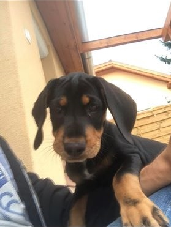

Az állatok mindig nagyon közel álltak hozzám, mivel kertes házban lakunk, ahol van egy macskám és volt egy nyulam is.
Jelenleg egy kutyánk is van, aki nagyon mozgékony és szeret játszani, ami közben általában inkább én szoktam elfáradni mintsem ő.
Sokszor viszem el sétáltatni a környéken és Ő cserébe boldogítja a mindenapjaimat és felvidít.